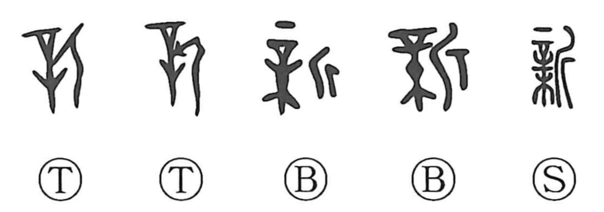

新

Kun: atarashii, arata, nii | On: shin
new ・ fresh ・ beginning
Explanation
新 combines 辛, a large needle with a handle, with 木, a tree, and 斤, an axe. To choose wood for a spirit tablet, the needle is cast, and the tree it strikes is cut down. The selection is received as the divine will.
The freshly felled wood makes the new tablet in which the ancestral presence is installed. Reverence before it belongs to 親, while 薪 names wood used in the associated ceremonies. Early uses of 新 frequently concern an ancestral shrine or lineage building, preserving this setting of sacred renewal.
From newly chosen and cut timber come new, a beginning, and renewing. The word extends to a new year or newly opened land. A fresh condition is established through the sacred selection and first cutting.